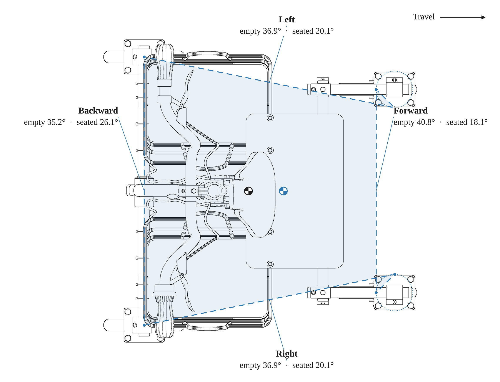

With a seated user the walker tolerates a 18° slope before tipping forward, its smallest margin.

Seated, the forward edge is the limit.
| Load case | Forward | Backward | Sideways |
|---|---|---|---|
| Empty | 40.8° | 35.2° | 36.9° |
| Baskets, 2 × 5 kg | 43.5° | 31.6° | 37.4° |
| User seated, 100 kg | 18.1° | 26.1° | 20.1° |
| Seated + baskets | 19.8° | 25.9° | 21.0° |
Full weight on one grip needs 7.8 kN to tip the empty walker.
The grip lies only 7 mm outside the side edge. Seated, a 555 N push on the backrest tips it backward, 1.4 times the 400 N design load.
Empty, a 60–75 N push at grip height tips it.
In use the hands load the grips and hold it down; seated, the same push must reach 303–455 N. Mass 21.1 kg; CG 363 mm high empty, 699 mm seated.